Data Understanding#
1. Import Library#
Pertama-tama yang dibutuhkan adalah beberapa library utama yaitu ada pandas yang digunakan untuk memanipulasi data, numpy untuk mengoperasi numerik, matplomatplotlib.pyplot & seaborn digunakan untuk visualisasi, dan scikit-learn biasanya adalah opsional, atau bisa digunakan untuk preprocessing & split data.
# Import library dasar
import pandas as pd
import numpy as np
import matplotlib.pyplot as plt
import seaborn as sns
from sklearn.preprocessing import LabelEncoder, StandardScaler
from sklearn.model_selection import train_test_split
2. Load Dataset#
# Load dataset
df = pd.read_csv("data-iris.csv")
print("\n--- Ukuran Data ---")
print("="*45)
print(f"Ukuran dataset: {df.shape[0]} baris, {df.shape[1]} kolom")
df.head()
--- Ukuran Data ---
=============================================
Ukuran dataset: 150 baris, 6 kolom
| sepal.length | sepal.width | petal.length | petal.width | variety | vnum | |
|---|---|---|---|---|---|---|
| 0 | 5.1 | 3.5 | 1.4 | 0.2 | Setosa | 0 |
| 1 | 4.9 | 3.0 | 1.4 | 0.2 | Setosa | 0 |
| 2 | 4.7 | 3.2 | 1.3 | 0.2 | Setosa | 0 |
| 3 | 4.6 | 3.1 | 1.5 | 0.2 | Setosa | 0 |
| 4 | 5.0 | 3.6 | 1.4 | 0.2 | Setosa | 0 |
3. Struktur Dataset#
print("\n--- Tipe Data ---")
print("="*45)
print(df.info())
print("\n--- 5 Data Teratas ---")
display(df.head())
--- Tipe Data ---
=============================================
<class 'pandas.core.frame.DataFrame'>
RangeIndex: 150 entries, 0 to 149
Data columns (total 6 columns):
# Column Non-Null Count Dtype
--- ------ -------------- -----
0 sepal.length 150 non-null float64
1 sepal.width 150 non-null float64
2 petal.length 150 non-null float64
3 petal.width 150 non-null float64
4 variety 150 non-null object
5 vnum 150 non-null int64
dtypes: float64(4), int64(1), object(1)
memory usage: 7.2+ KB
None
--- 5 Data Teratas ---
| sepal.length | sepal.width | petal.length | petal.width | variety | vnum | |
|---|---|---|---|---|---|---|
| 0 | 5.1 | 3.5 | 1.4 | 0.2 | Setosa | 0 |
| 1 | 4.9 | 3.0 | 1.4 | 0.2 | Setosa | 0 |
| 2 | 4.7 | 3.2 | 1.3 | 0.2 | Setosa | 0 |
| 3 | 4.6 | 3.1 | 1.5 | 0.2 | Setosa | 0 |
| 4 | 5.0 | 3.6 | 1.4 | 0.2 | Setosa | 0 |
print("\n--- Cek Nilai Unik Di Kolom Target ---")
print("="*45)
print(df["variety"].value_counts())
--- Cek Nilai Unik Di Kolom Target ---
=============================================
variety
Setosa 50
Versicolor 50
Virginica 50
Name: count, dtype: int64
4. Tipe Data#
print("\n--- Tipe Data Kolom ---")
print("="*45)
print(df.dtypes)
--- Tipe Data Kolom ---
=============================================
sepal.length float64
sepal.width float64
petal.length float64
petal.width float64
variety object
vnum int64
dtype: object
5. Mengecek Missing Value dan Duplikasi#
print("\n--- Missing Value ---")
print("="*45)
print(df.isnull().sum())
--- Missing Value ---
=============================================
sepal.length 0
sepal.width 0
petal.length 0
petal.width 0
variety 0
vnum 0
dtype: int64
print("\n--- Jumlah Duplikasi ---")
print("="*45)
print("Jumlah duplikasi:", df.duplicated().sum())
--- Jumlah Duplikasi ---
=============================================
Jumlah duplikasi: 1
6. Eksplorasi Data Awal#
print("\n--- Deskripsi Statistik ---")
display(df.describe().round(2))
# Visualisasi matriks scatter menggunakan seaborn
sns.set_style("whitegrid")
pairplot = sns.pairplot(df.drop(["vnum", "variety"], axis=1), diag_kind="kde")
pairplot.fig.suptitle("Scatter Matrix untuk Eksplorasi Awal", y=1.02)
plt.show()
--- Deskripsi Statistik ---
| sepal.length | sepal.width | petal.length | petal.width | vnum | |
|---|---|---|---|---|---|
| count | 150.00 | 150.00 | 150.00 | 150.00 | 150.00 |
| mean | 5.84 | 3.06 | 3.76 | 1.20 | 1.00 |
| std | 0.83 | 0.44 | 1.77 | 0.76 | 0.82 |
| min | 4.30 | 2.00 | 1.00 | 0.10 | 0.00 |
| 25% | 5.10 | 2.80 | 1.60 | 0.30 | 0.00 |
| 50% | 5.80 | 3.00 | 4.35 | 1.30 | 1.00 |
| 75% | 6.40 | 3.30 | 5.10 | 1.80 | 2.00 |
| max | 7.90 | 4.40 | 6.90 | 2.50 | 2.00 |
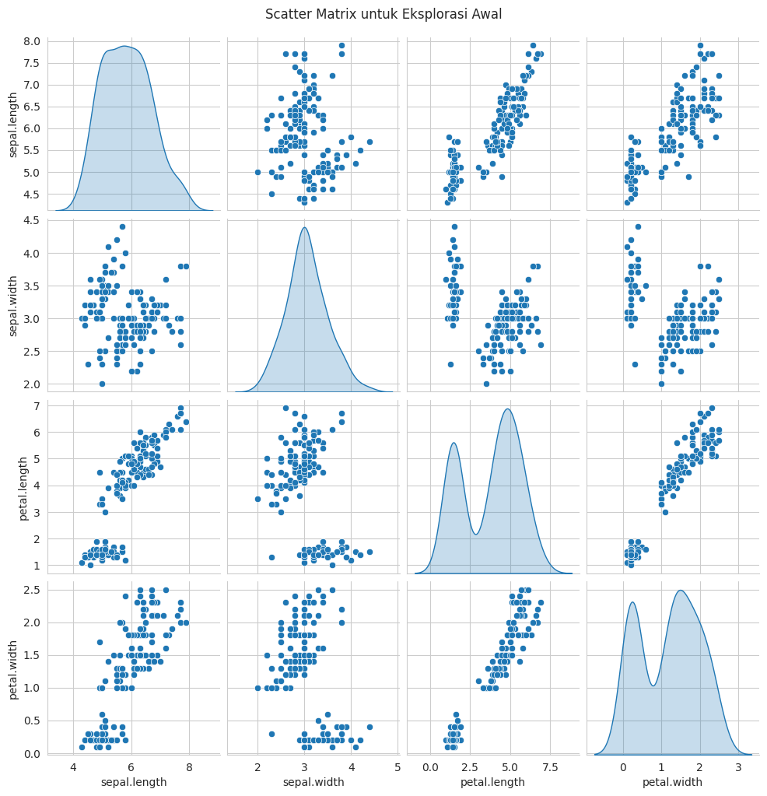
7. Analisis Distribusi Data Per Fitur#
print("\n=== Histogram Distribusi Setiap Fitur ===")
plt.figure(figsize=(12,6))
num_cols = df.columns[:-2] # hanya fitur numerik
for i, col in enumerate(num_cols, 1):
plt.subplot(2, 2, i)
sns.histplot(df[col], kde=True, bins=20, color="skyblue")
plt.title(f"Distribusi {col}")
plt.tight_layout()
plt.show()
=== Histogram Distribusi Setiap Fitur ===
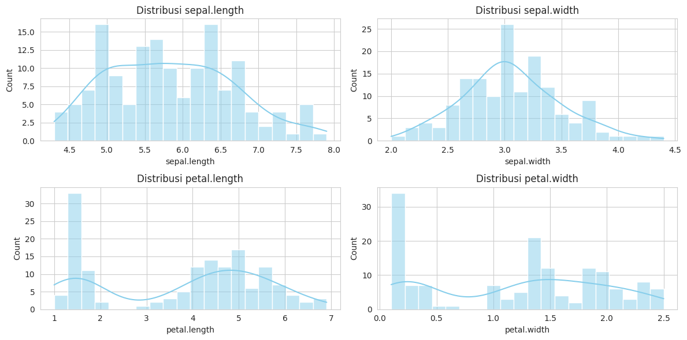
8. Pairplot sebaran per spesies#
print("\n=== Pairplot Sebaran Data per Spesies ===")
pairplot_fig = sns.pairplot(df, hue="variety", palette="Set2")
pairplot_fig.fig.suptitle("Distribusi Data per Fitur dan Spesies", y=1.02)
plt.show()
=== Pairplot Sebaran Data per Spesies ===
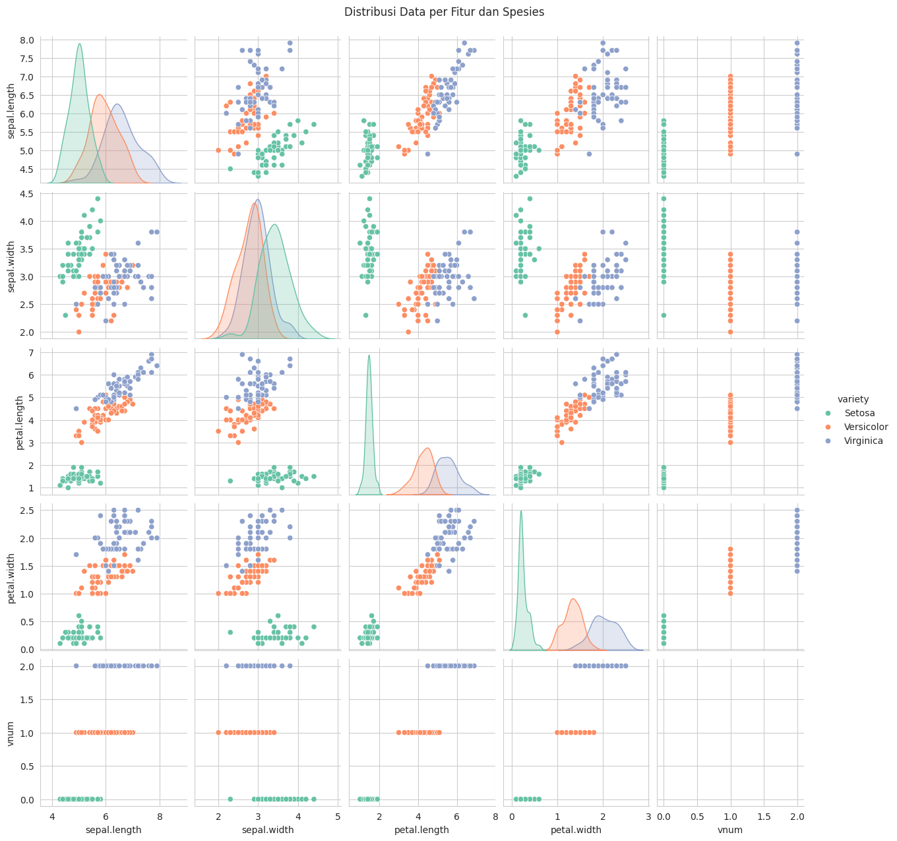
9. Korelasi Antar Fitur#
# Hitung matriks korelasi langsung (numeric_only=True)
korelasi = df.corr(numeric_only=True)
print("\n=== Tabel Korelasi Fitur Numerik ===")
display(korelasi)
# Visualisasi heatmap korelasi
plt.figure(figsize=(9,7))
sns.heatmap(korelasi, annot=True, cmap="coolwarm", fmt=".2f", linewidths=0.5)
plt.title("Heatmap Korelasi Antar Fitur", fontsize=14)
plt.show()
=== Tabel Korelasi Fitur Numerik ===
| sepal.length | sepal.width | petal.length | petal.width | vnum | |
|---|---|---|---|---|---|
| sepal.length | 1.000000 | -0.117570 | 0.871754 | 0.817941 | 0.782561 |
| sepal.width | -0.117570 | 1.000000 | -0.428440 | -0.366126 | -0.426658 |
| petal.length | 0.871754 | -0.428440 | 1.000000 | 0.962865 | 0.949035 |
| petal.width | 0.817941 | -0.366126 | 0.962865 | 1.000000 | 0.956547 |
| vnum | 0.782561 | -0.426658 | 0.949035 | 0.956547 | 1.000000 |
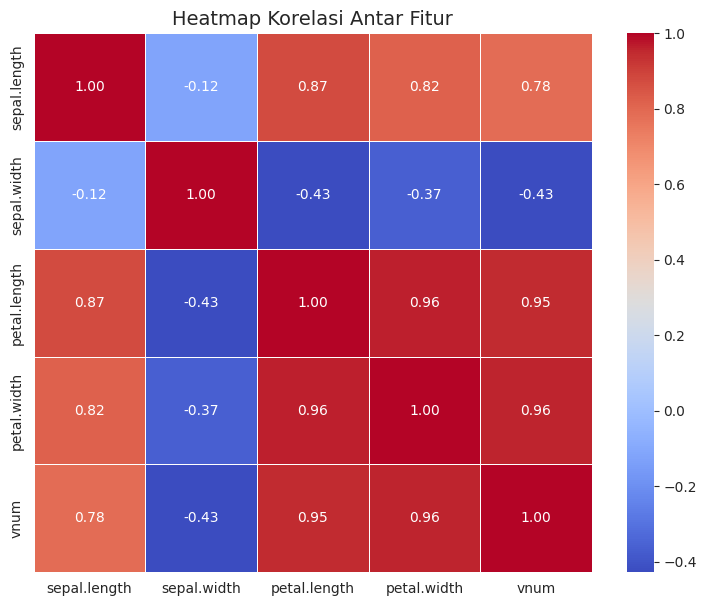
10. Analisis Distribusi Fitur per Spesies#
print("\n=== Analisis Distribusi Fitur per Spesies ===")
# Ambil hanya 4 kolom numerik pertama
feature_cols = df.select_dtypes(include='number').columns[:4]
fig, axes = plt.subplots(2, 2, figsize=(12, 6))
# Warna dari seaborn palette
colors = sns.color_palette("Set2", 3)
for ax, col in zip(axes.ravel(), feature_cols):
# Ambil data tiap spesies
kelompok = [df.loc[df['variety'] == s, col] for s in df['variety'].unique()]
# Buat boxplot dengan label langsung
bp = ax.boxplot(kelompok, patch_artist=True, labels=df['variety'].unique())
# Warnai boxplot
for patch, c in zip(bp['boxes'], colors):
patch.set_facecolor(c)
patch.set_alpha(0.7)
ax.set_title(f"Distribusi {col}")
ax.grid(True, linestyle="--", alpha=0.6)
plt.tight_layout()
plt.show()
=== Analisis Distribusi Fitur per Spesies ===
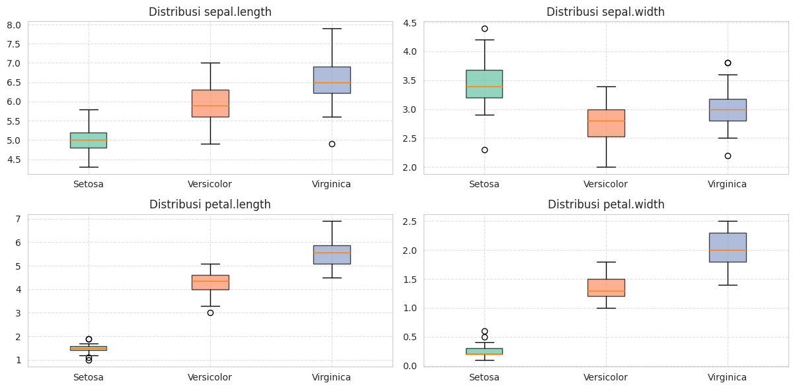
11. Identifikasi Outlier (IQR per kolom + Z-Score & IQR keseluruhan)#
from scipy import stats
import numpy as np
# --- Ambil hanya kolom numerik ---
kolom_num = df.select_dtypes(np.number)
# ============================================================
# 1. OUTLIER MENGGUNAKAN IQR (PER KOLOM)
# ============================================================
q_stats = kolom_num.quantile([0.25, 0.75])
iqr = q_stats.loc[0.75] - q_stats.loc[0.25]
mask_outlier_iqr = (
kolom_num.lt(q_stats.loc[0.25] - 1.5 * iqr) |
kolom_num.gt(q_stats.loc[0.75] + 1.5 * iqr)
)
print("\n=== [IQR] Jumlah Outlier per Kolom ===")
print(mask_outlier_iqr.sum().to_string())
persentase_iqr = (mask_outlier_iqr.sum() / len(df) * 100).round(2).astype(str) + " %"
print("\n=== [IQR] Persentase Outlier per Kolom ===")
print(persentase_iqr.to_string())
outliers_iqr = mask_outlier_iqr.any(axis=1)
print(f"\n>>> Total Outlier (IQR - baris): {outliers_iqr.sum()} sampel "
f"({(outliers_iqr.sum()/len(df)*100):.2f}%)")
# ============================================================
# 2. OUTLIER MENGGUNAKAN Z-SCORE (PER KOLOM)
# ============================================================
z_scores = np.abs(stats.zscore(kolom_num))
mask_outlier_z = (z_scores > 3)
print("\n=== [Z-Score] Jumlah Outlier per Kolom ===")
print(mask_outlier_z.sum(axis=0).to_string())
persentase_z = (mask_outlier_z.sum(axis=0) / len(df) * 100).round(2).astype(str) + " %"
print("\n=== [Z-Score] Persentase Outlier per Kolom ===")
print(persentase_z.to_string())
outliers_z = mask_outlier_z.any(axis=1)
print(f"\n>>> Total Outlier (Z-Score - baris): {outliers_z.sum()} sampel "
f"({(outliers_z.sum()/len(df)*100):.2f}%)")
# ============================================================
# 3. DATA OUTLIER (GABUNGAN Z-SCORE & IQR)
# ============================================================
df_outliers = df[outliers_z | outliers_iqr]
print("\n=== Data Outlier (contoh 5 baris) ===")
display(df_outliers.head())
=== [IQR] Jumlah Outlier per Kolom ===
sepal.length 0
sepal.width 4
petal.length 0
petal.width 0
vnum 0
=== [IQR] Persentase Outlier per Kolom ===
sepal.length 0.0 %
sepal.width 2.67 %
petal.length 0.0 %
petal.width 0.0 %
vnum 0.0 %
>>> Total Outlier (IQR - baris): 4 sampel (2.67%)
=== [Z-Score] Jumlah Outlier per Kolom ===
sepal.length 0
sepal.width 1
petal.length 0
petal.width 0
vnum 0
=== [Z-Score] Persentase Outlier per Kolom ===
sepal.length 0.0 %
sepal.width 0.67 %
petal.length 0.0 %
petal.width 0.0 %
vnum 0.0 %
>>> Total Outlier (Z-Score - baris): 1 sampel (0.67%)
=== Data Outlier (contoh 5 baris) ===
| sepal.length | sepal.width | petal.length | petal.width | variety | vnum | |
|---|---|---|---|---|---|---|
| 15 | 5.7 | 4.4 | 1.5 | 0.4 | Setosa | 0 |
| 32 | 5.2 | 4.1 | 1.5 | 0.1 | Setosa | 0 |
| 33 | 5.5 | 4.2 | 1.4 | 0.2 | Setosa | 0 |
| 60 | 5.0 | 2.0 | 3.5 | 1.0 | Versicolor | 1 |
12. Deteksi Outlier Per Kolom#
from scipy import stats
print("\n=== Outlier Detail per Fitur (IQR & Z-Score) ===")
for col in kolom_num.columns:
# === Metode IQR ===
q1, q3 = kolom_num[col].quantile([0.25, 0.75])
iqr = q3 - q1
batas_bawah, batas_atas = q1 - 1.5 * iqr, q3 + 1.5 * iqr
outlier_iqr = df[(df[col] < batas_bawah) | (df[col] > batas_atas)][[col, "variety"]]
print(f"\n>>> Outlier pada fitur '{col}' (IQR):")
if not outlier_iqr.empty:
display(outlier_iqr)
else:
print("Tidak ada outlier (IQR)")
# === Metode Z-Score ===
zscore_col = stats.zscore(kolom_num[col])
outlier_z = df[np.abs(zscore_col) > 3][[col, "variety"]]
print(f"\n>>> Outlier pada fitur '{col}' (Z-Score):")
if not outlier_z.empty:
display(outlier_z)
else:
print("Tidak ada outlier (Z-Score)")
=== Outlier Detail per Fitur (IQR & Z-Score) ===
>>> Outlier pada fitur 'sepal.length' (IQR):
Tidak ada outlier (IQR)
>>> Outlier pada fitur 'sepal.length' (Z-Score):
Tidak ada outlier (Z-Score)
>>> Outlier pada fitur 'sepal.width' (IQR):
| sepal.width | variety | |
|---|---|---|
| 15 | 4.4 | Setosa |
| 32 | 4.1 | Setosa |
| 33 | 4.2 | Setosa |
| 60 | 2.0 | Versicolor |
>>> Outlier pada fitur 'sepal.width' (Z-Score):
| sepal.width | variety | |
|---|---|---|
| 15 | 4.4 | Setosa |
>>> Outlier pada fitur 'petal.length' (IQR):
Tidak ada outlier (IQR)
>>> Outlier pada fitur 'petal.length' (Z-Score):
Tidak ada outlier (Z-Score)
>>> Outlier pada fitur 'petal.width' (IQR):
Tidak ada outlier (IQR)
>>> Outlier pada fitur 'petal.width' (Z-Score):
Tidak ada outlier (Z-Score)
>>> Outlier pada fitur 'vnum' (IQR):
Tidak ada outlier (IQR)
>>> Outlier pada fitur 'vnum' (Z-Score):
Tidak ada outlier (Z-Score)
12.1 Deteksi Outlier dengan Model ABOD, KNN, LOF#
import numpy as np
import pandas as pd
from scipy import stats
from pyod.models.knn import KNN
from pyod.models.lof import LOF
from pyod.models.abod import ABOD
# ============================================================
# 1. AMBIL FITUR NUMERIK
# ============================================================
X = df.select_dtypes(include="number") # ambil hanya kolom numerik
# ============================================================
# 2. OUTLIER MENGGUNAKAN IQR (PER KOLOM)
# ============================================================
q_stats = X.quantile([0.25, 0.75])
iqr = q_stats.loc[0.75] - q_stats.loc[0.25]
mask_outlier_iqr = (
X.lt(q_stats.loc[0.25] - 1.5 * iqr) |
X.gt(q_stats.loc[0.75] + 1.5 * iqr)
)
print("\n=== [IQR] Jumlah Outlier per Kolom ===")
print(mask_outlier_iqr.sum().to_string())
persentase_iqr = (mask_outlier_iqr.sum() / len(df) * 100).round(2).astype(str) + " %"
print("\n=== [IQR] Persentase Outlier per Kolom ===")
print(persentase_iqr.to_string())
outliers_iqr = mask_outlier_iqr.any(axis=1)
print(f"\n>>> Total Outlier (IQR - baris): {outliers_iqr.sum()} sampel "
f"({(outliers_iqr.sum()/len(df)*100):.2f}%)")
# ============================================================
# 3. OUTLIER MENGGUNAKAN Z-SCORE (PER KOLOM)
# ============================================================
z_scores = np.abs(stats.zscore(X))
mask_outlier_z = (z_scores > 3)
print("\n=== [Z-Score] Jumlah Outlier per Kolom ===")
print(mask_outlier_z.sum(axis=0).to_string())
persentase_z = (mask_outlier_z.sum(axis=0) / len(df) * 100).round(2).astype(str) + " %"
print("\n=== [Z-Score] Persentase Outlier per Kolom ===")
print(persentase_z.to_string())
outliers_z = mask_outlier_z.any(axis=1)
print(f"\n>>> Total Outlier (Z-Score - baris): {outliers_z.sum()} sampel "
f"({(outliers_z.sum()/len(df)*100):.2f}%)")
# ============================================================
# 4. OUTLIER MENGGUNAKAN KNN
# ============================================================
knn = KNN()
knn.fit(X)
mask_knn = knn.labels_ == 0
df_knn_clean = df[mask_knn]
df_knn_outliers = df[~mask_knn]
print("\n=== [KNN] Deteksi Outlier ===")
print(f"Jumlah outlier: {df_knn_outliers.shape[0]} sampel "
f"({(df_knn_outliers.shape[0]/len(df)*100):.2f}%)")
display(df_knn_outliers.head())
# ============================================================
# 5. OUTLIER MENGGUNAKAN ABOD
# ============================================================
try:
abod = ABOD(method='fast')
abod.fit(X)
mask_abod = abod.labels_ == 0
df_abod_clean = df[mask_abod]
df_abod_outliers = df[~mask_abod]
print("\n=== [ABOD] Deteksi Outlier ===")
print(f"Jumlah outlier: {df_abod_outliers.shape[0]} sampel "
f"({(df_abod_outliers.shape[0]/len(df)*100):.2f}%)")
display(df_abod_outliers.head())
except Exception as e:
print("ABOD error di Python 3.12:", e)
df_abod_clean = df.copy()
df_abod_outliers = pd.DataFrame()
# ============================================================
# 6. OUTLIER MENGGUNAKAN LOF
# ============================================================
lof = LOF()
lof.fit(X)
mask_lof = lof.labels_ == 0
df_lof_clean = df[mask_lof]
df_lof_outliers = df[~mask_lof]
print("\n=== [LOF] Deteksi Outlier ===")
print(f"Jumlah outlier: {df_lof_outliers.shape[0]} sampel "
f"({(df_lof_outliers.shape[0]/len(df)*100):.2f}%)")
display(df_lof_outliers.head())
# ============================================================
# 7. RINGKASAN
# ============================================================
print("\n=== Ringkasan Ukuran Data ===")
print("Ukuran data asli: ", df.shape)
print("Setelah hapus outlier (KNN): ", df_knn_clean.shape)
print("Setelah hapus outlier (ABOD):", df_abod_clean.shape)
print("Setelah hapus outlier (LOF): ", df_lof_clean.shape)
=== [IQR] Jumlah Outlier per Kolom ===
sepal.length 0
sepal.width 4
petal.length 0
petal.width 0
vnum 0
=== [IQR] Persentase Outlier per Kolom ===
sepal.length 0.0 %
sepal.width 2.67 %
petal.length 0.0 %
petal.width 0.0 %
vnum 0.0 %
>>> Total Outlier (IQR - baris): 4 sampel (2.67%)
=== [Z-Score] Jumlah Outlier per Kolom ===
sepal.length 0
sepal.width 1
petal.length 0
petal.width 0
vnum 0
=== [Z-Score] Persentase Outlier per Kolom ===
sepal.length 0.0 %
sepal.width 0.67 %
petal.length 0.0 %
petal.width 0.0 %
vnum 0.0 %
>>> Total Outlier (Z-Score - baris): 1 sampel (0.67%)
=== [KNN] Deteksi Outlier ===
Jumlah outlier: 15 sampel (10.00%)
| sepal.length | sepal.width | petal.length | petal.width | variety | vnum | |
|---|---|---|---|---|---|---|
| 41 | 4.5 | 2.3 | 1.3 | 0.3 | Setosa | 0 |
| 57 | 4.9 | 2.4 | 3.3 | 1.0 | Versicolor | 1 |
| 60 | 5.0 | 2.0 | 3.5 | 1.0 | Versicolor | 1 |
| 68 | 6.2 | 2.2 | 4.5 | 1.5 | Versicolor | 1 |
| 93 | 5.0 | 2.3 | 3.3 | 1.0 | Versicolor | 1 |
=== [ABOD] Deteksi Outlier ===
Jumlah outlier: 15 sampel (10.00%)
| sepal.length | sepal.width | petal.length | petal.width | variety | vnum | |
|---|---|---|---|---|---|---|
| 15 | 5.7 | 4.4 | 1.5 | 0.4 | Setosa | 0 |
| 41 | 4.5 | 2.3 | 1.3 | 0.3 | Setosa | 0 |
| 62 | 6.0 | 2.2 | 4.0 | 1.0 | Versicolor | 1 |
| 68 | 6.2 | 2.2 | 4.5 | 1.5 | Versicolor | 1 |
| 70 | 5.9 | 3.2 | 4.8 | 1.8 | Versicolor | 1 |
=== [LOF] Deteksi Outlier ===
Jumlah outlier: 15 sampel (10.00%)
| sepal.length | sepal.width | petal.length | petal.width | variety | vnum | |
|---|---|---|---|---|---|---|
| 13 | 4.3 | 3.0 | 1.1 | 0.1 | Setosa | 0 |
| 14 | 5.8 | 4.0 | 1.2 | 0.2 | Setosa | 0 |
| 15 | 5.7 | 4.4 | 1.5 | 0.4 | Setosa | 0 |
| 33 | 5.5 | 4.2 | 1.4 | 0.2 | Setosa | 0 |
| 41 | 4.5 | 2.3 | 1.3 | 0.3 | Setosa | 0 |
=== Ringkasan Ukuran Data ===
Ukuran data asli: (150, 6)
Setelah hapus outlier (KNN): (135, 6)
Setelah hapus outlier (ABOD): (135, 6)
Setelah hapus outlier (LOF): (135, 6)
Tugas 1 Power BI#
Menarik satu dataset yang sama dengan 2 sumber berbeda, dan ditarik ke power bi#
1. min, max dari setiap kolom dan rata rata dari setiap kolom#
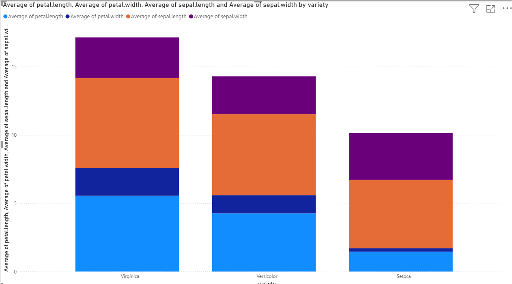
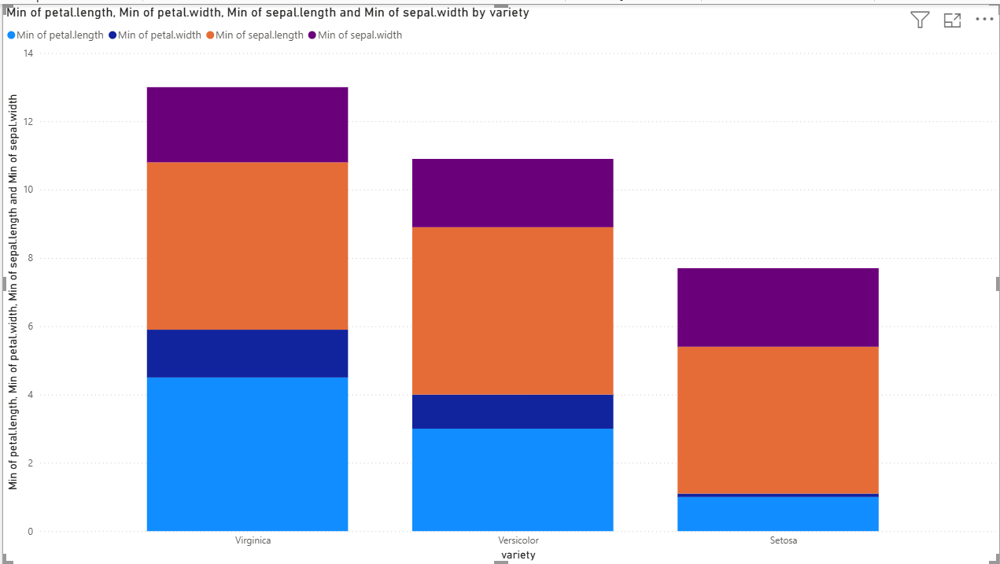
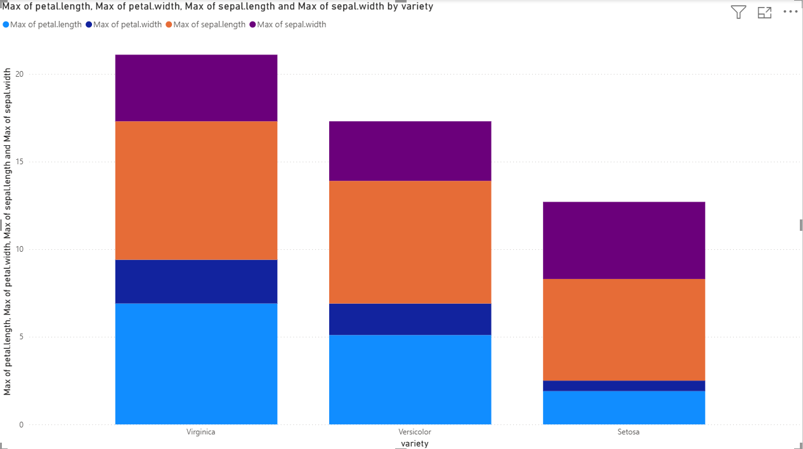
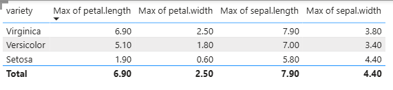
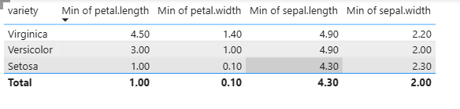
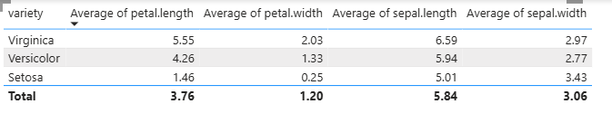
Penjelasan#
Feature |
Min |
Max |
Average |
|---|---|---|---|
sepal.length |
4.30 |
7.90 |
5.84 |
sepal.width |
2.00 |
4.40 |
3.06 |
petal.length |
1.00 |
6.90 |
3.76 |
petal.width |
0.10 |
0.1 |
2.50 |
Sepal Length (sepal.length)
Rentang: 4.30 – 7.90 cm, rata-rata 5.84 cm. Nilai ini menunjukkan sepal memiliki variasi yang cukup besar, dan sebagian besar data berada di sekitar 5–6 cm.
Sepal Width (sepal.width)
Rentang: 2.00 – 4.40 cm, rata-rata 3.06 cm. Lebar sepal cenderung lebih sempit dan memiliki variasi yang lebih kecil dibanding panjang sepal.
Petal Length (petal.length)
Rentang: 1.00 – 6.90 cm, rata-rata 3.76 cm. Petal memiliki variasi yang paling besar dibanding fitur lain, menunjukkan perbedaan ukuran yang signifikan antar spesies.
Petal Width (petal.width)
Rentang: 0.10 – 2.50 cm, rata-rata 1.20 cm. Lebar petal relatif kecil, tetapi variasinya cukup signifikan, mengindikasikan fitur ini bisa membantu membedakan spesies.
Kesimpulan:
Petal (panjang dan lebar) menunjukkan variasi lebih besar dibanding sepal, sehingga lebih informatif untuk klasifikasi spesies Iris.
Sepal relatif lebih seragam, terutama lebarnya, sehingga mungkin kurang sensitif untuk membedakan spesies.
Data tidak menunjukkan nilai ekstrem yang terlalu mencurigakan, tapi outlier kecil mungkin tetap ada terutama pada petal.
2. Jumlah Setiap Kelas#
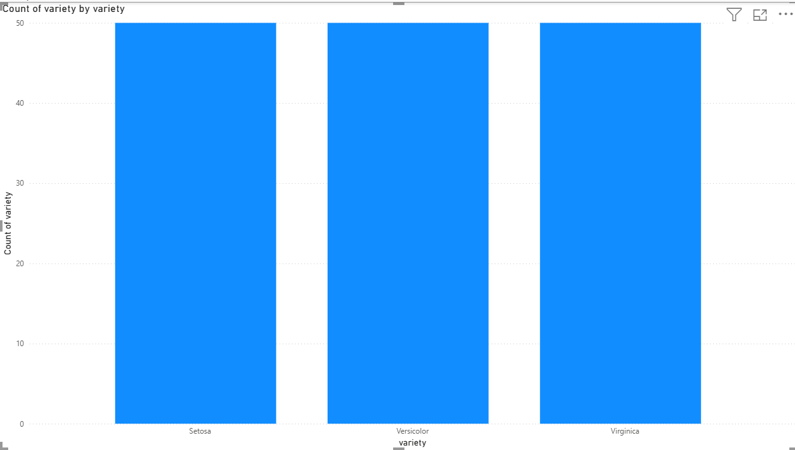
Dataset Iris memiliki tiga kelas bunga: Setosa, Versicolor, dan Virginica. Nilai minimum, maksimum, dan rata-rata tiap fitur merepresentasikan kombinasi dari ketiga kelas ini, membantu memahami perbedaan karakteristik masing-masing kelas.
Tugas 2 Power BI#
Menggabungkan dataset yang dipisah, dimana yang petal saya tarik dari MySQL dan yang sepal dari Postgre. Berikut Kodenya:
import psycopg2
import mysql.connector
import pandas as pd
# === PostgreSQL Connection ===
pg_conn = psycopg2.connect(
host="localhost",
database="postgres",
user="postgres",
password="123"
)
query_pg = 'SELECT id, "Class", "sepal.length", "sepal.width" FROM public."iriSepal";'
postgres_data = pd.read_sql(query_pg, pg_conn)
pg_conn.close()
# === MySQL Connection ===
mysql_conn = mysql.connector.connect(
host="localhost",
user="root",
password="",
database="iris_petal"
)
query_mysql = "SELECT id, Class, petal length, petal width FROM petal;"
mysql_data = pd.read_sql(query_mysql, mysql_conn)
mysql_conn.close()
# === Rename kolom di MySQL agar konsisten ===
mysql_data = mysql_data.rename(columns={
'petal length': 'petal_length',
'petal width': 'petal_width'
})
# === Gabungkan data berdasarkan kolom 'id' ===
combined_data = pd.merge(postgres_data, mysql_data, on="id")
# === Output ke Power BI ===
combined_dataimport psycopg2
import mysql.connector
import pandas as pd
# === PostgreSQL Connection ===
pg_conn = psycopg2.connect(
host="localhost",
database="postgres",
user="postgres",
password="123"
)
query_pg = 'SELECT id, "Class", "sepal.length", "sepal.width" FROM public."iriSepal";'
postgres_data = pd.read_sql(query_pg, pg_conn)
pg_conn.close()
# === MySQL Connection ===
mysql_conn = mysql.connector.connect(
host="localhost",
user="root",
password="",
database="iris_petal"
)
query_mysql = "SELECT id, Class, petal length, petal width FROM petal;"
mysql_data = pd.read_sql(query_mysql, mysql_conn)
mysql_conn.close()
# === Rename kolom di MySQL agar konsisten ===
mysql_data = mysql_data.rename(columns={
'petal length': 'petal_length',
'petal width': 'petal_width'
})
# === Gabungkan data berdasarkan kolom 'id' ===
combined_data = pd.merge(postgres_data, mysql_data, on="id")
# === Output ke Power BI ===
combined_data
Cell In[17], line 37
combined_dataimport psycopg2
^
SyntaxError: invalid syntax
1. Jumlah setiap kelas#
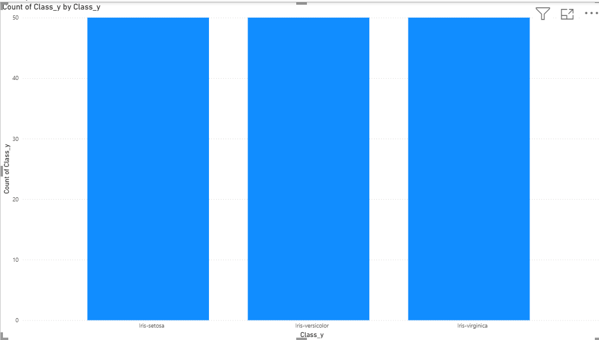
2. min max dari setiap kolom dan rata rata dari setiap kolom#
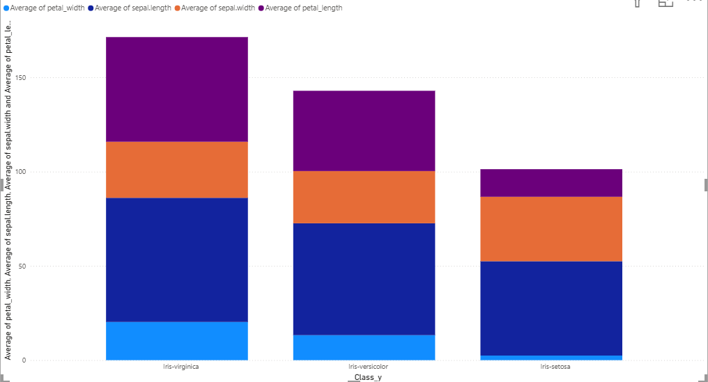
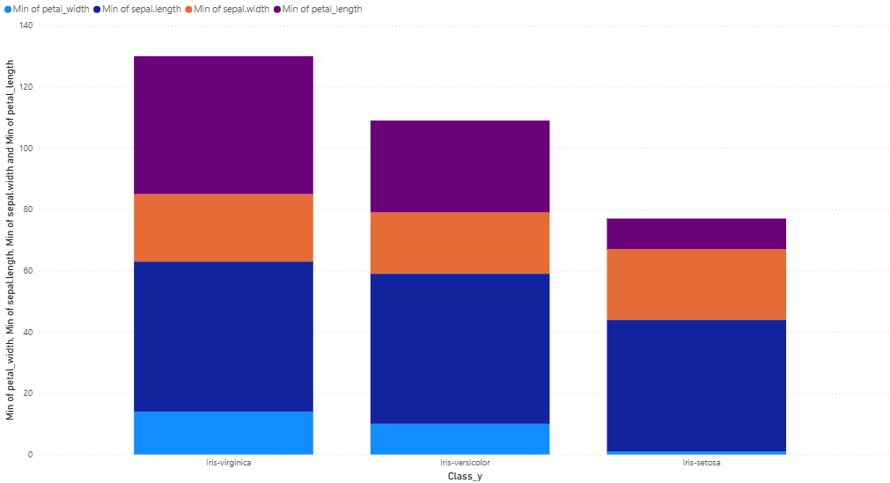
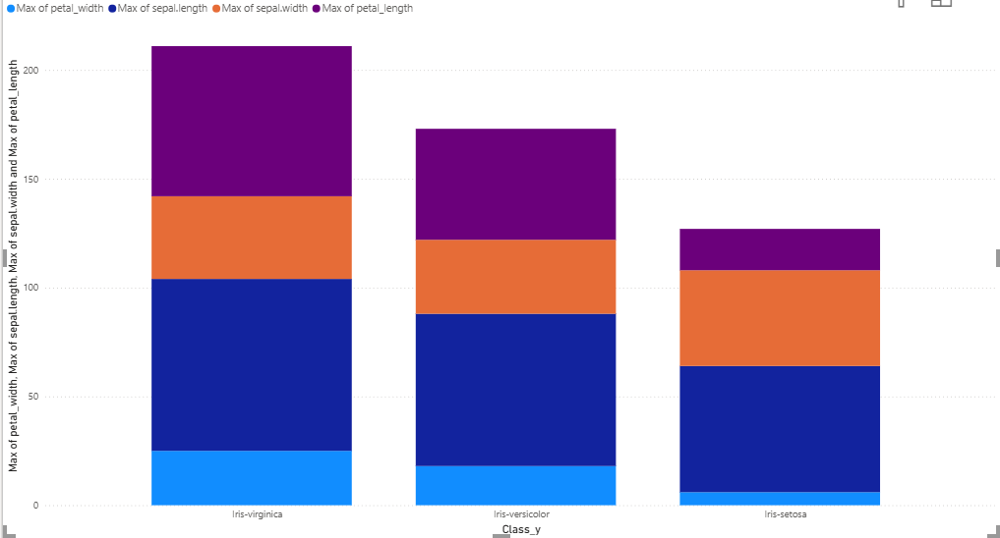